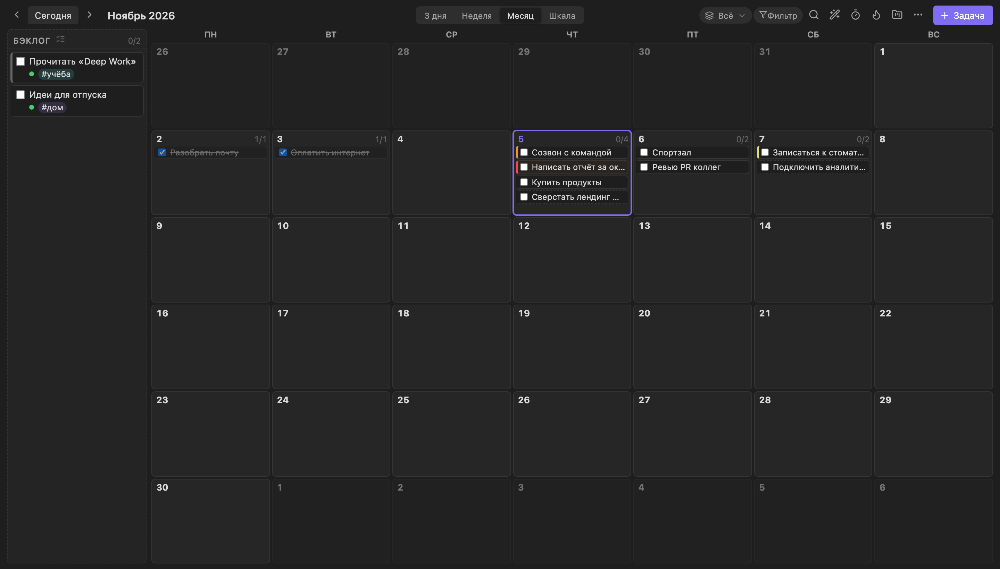
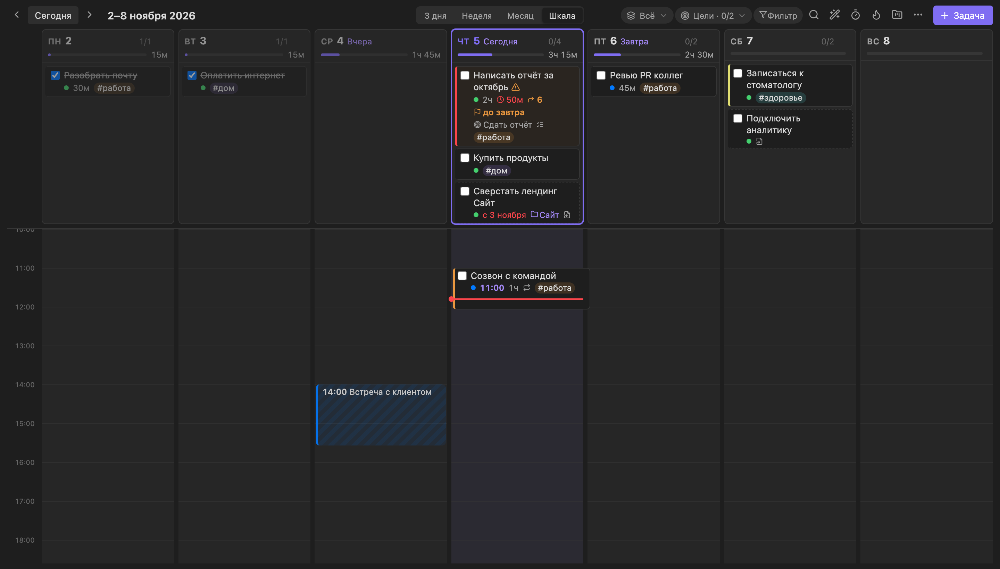
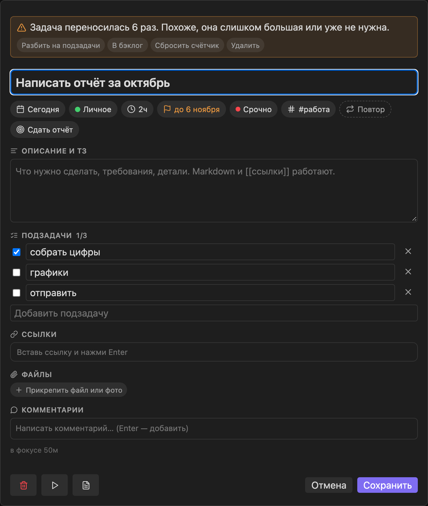
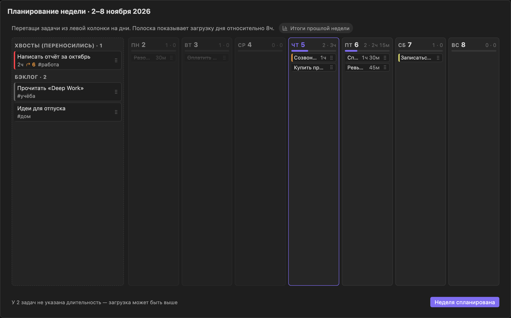
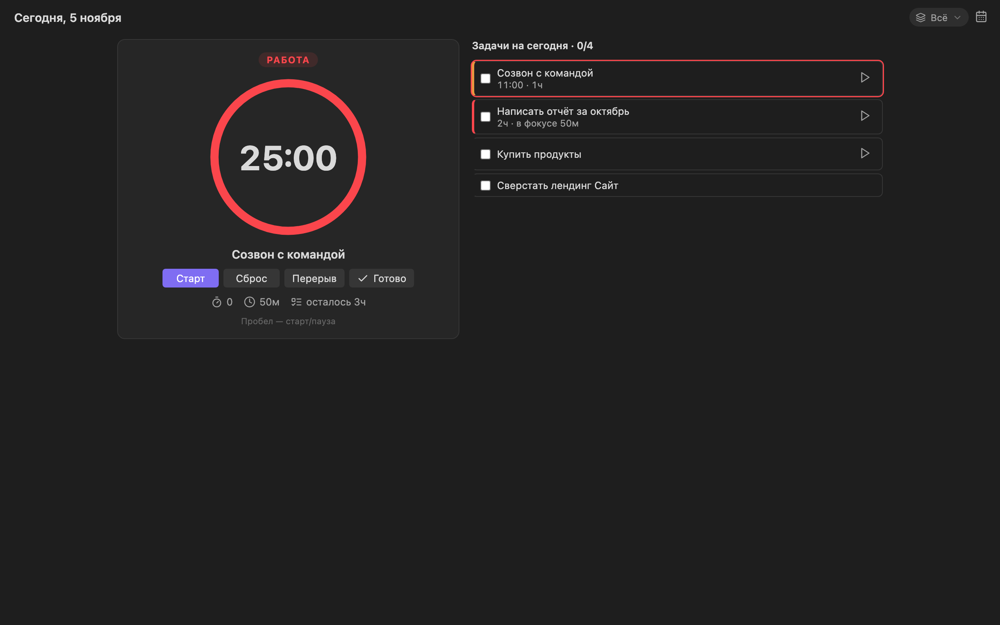
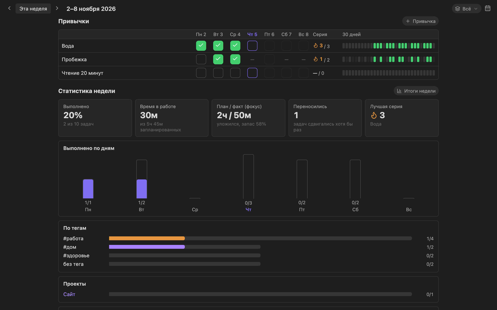
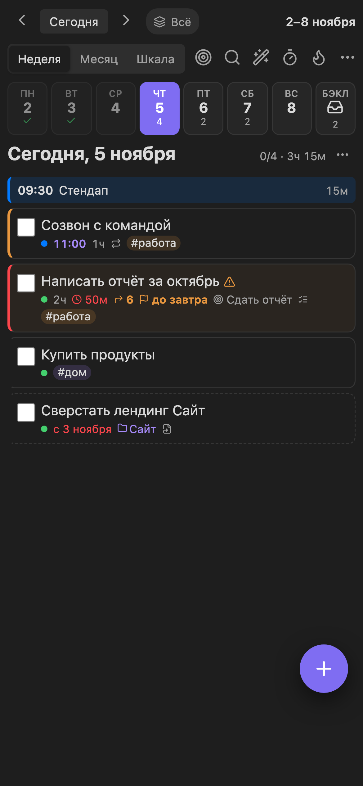

Всё делается прямо в Obsidian, никаких файлов вручную. Плагин ставится через BRAT — установщик из официального каталога Obsidian. Он же потом сам обновляет Weekpulse.
Порядок важен: сначала хранилище в iCloud, потом плагин. Если создать хранилище «где-нибудь» на компьютере, а синхронизацию захотеть потом, придётся всё переносить.
1
Создай хранилище в iCloud — на iPhone
Именно на iPhone: так Obsidian сам положит хранилище в нужную папку iCloud, и оно появится на всех твоих устройствах.
Нажми Add beta plugin и вставь адрес: ob-volkia/weekpulse
Версию оставь последней, галочку Enable after installing the plugin не снимай → Add plugin.
Готово: на панели появятся значки календаря (неделя), таймера (фокус) и огонька (привычки). Если плагин не включился сам — включи Weekpulse в Сторонние плагины.
4
Компьютер — по желанию
Установи Obsidian на Mac и подожди минуту, пока iCloud синхронизирует папку.
Открыть папку как хранилище›iCloud Drive›Obsidian›твоё хранилище
Если Obsidian спросит про доверие плагинам — «Доверять». Weekpulse и BRAT уже на месте: они приехали из iCloud вместе с хранилищем.
Обновления
BRAT сам проверяет обновления при каждом запуске Obsidian. Вручную: палитра команд (Cmd + P) → BRAT: Check for updates to all beta plugins. Задачи и настройки при обновлении не трогаются.
Если iPhone нет
Создай хранилище прямо на компьютере и поставь плагин шагами 2–3. Для синхронизации потом подойдёт Obsidian Sync или Syncthing.
2Первый запуск
При первом включении плагин сам создаёт папку Planner/ с файлами задач, привычек и шаблонов. Можно сразу пользоваться, но стоит заглянуть в Настройки›Weekpulse.
ПрофилиПо умолчанию есть «Работа» и «Личное». Переименуй, поменяй цвета или добавь свои.
Ёмкость дняСколько часов в день ты реально планируешь. От этого зависит полоска загрузки дня.
Автоперенос невыполненногоВключён: вчерашние незакрытые задачи утром сами оказываются на сегодня.
КалендариПодключи Google или Apple Календарь, чтобы видеть встречи рядом с задачами (раздел 10).
3Экран недели
Неделя: бэклог слева, дни с полоской загрузки, события календаря синим, карточки задач.
Слева — стрелки «назад / вперёд», «Сегодня» и даты на экране.
По центру — переключатель вида.
Справа — профиль, цели недели, фильтр, поиск, планирование, фокус, привычки, проекты, меню ⋯ и кнопка + Задача.
Бэклог — задачи без даты, всё «когда-нибудь».
Полоска под днём — сколько часов запланировано. Если больше ёмкости дня, день краснеет.
Значок ↪ 6 на карточке — сколько раз задачу переносили. После 5 переносов плагин предложит разбить её, отправить в бэклог или удалить.
Четыре вида
3 дняВчера, сегодня, завтра — широкие колонки, когда в задачах много текста. Стрелки листают по 3 дня.
НеделяБэклог и 7 колонок. Основной вид.

МесяцКалендарная сетка, задачи перетаскиваются между любыми днями. Клик по числу открывает неделю.

ШкалаПочасовая сетка: перетащи задачу на час — время выставится с шагом 15 минут.
Выбранный вид запоминается на каждом устройстве отдельно. Клавиши: 3wml.
4Как добавлять задачи
Кнопка + Задача (или n), поле «Добавить…» внизу колонки дня, или Cmd+Shift+A из любого места Obsidian. Пиши всё одной строкой — плагин разберёт сам:
Пишешь
Получится
завтрапт15.12
день
бэклог
без даты
14:00@9
время
1ч30м1ч30м
длительность
#работа
тег
!!!!!!!-
приоритет: срочно, высокий, средний, низкий
до птдо 15.12
дедлайн
по буднямкаждый пн и чт
повтор (ещё: каждый день, каждую неделю, каждый месяц, каждые 3 дня)
[[Сайт]]
задача попадает в проект «Сайт»
Пример: Созвон с клиентом пт 15:00 1ч #работа !! — встреча на ближайшую пятницу в 15:00, на час, с тегом и высоким приоритетом.
5Окно задачи

Открывается кликом по карточке. Сверху — название и строка чипов: нажми любой, чтобы изменить.
Отмена: после удаления и массовых действий внизу на несколько секунд появляется «Отменить». На компьютере — Cmd+Z.
7Профили, цели, фильтры
Профили
Разделяют задачи, например на «Работа» и «Личное», но всё остаётся в одном планере.
Переключатель — кнопка с цветной точкой в шапке. «Всё» показывает задачи всех профилей.
Новая задача получает текущий профиль; в режиме «Всё» — профиль по умолчанию.
Полоска загрузки дня считает все профили — чтобы не перегрузить день скрытыми задачами.
Выбор запоминается на каждом устройстве: на работе «Работа», дома «Всё».
Цели неделиКнопка с мишенью: 1–3 главные цели. Задачу привязывают к цели чипом в окне задачи; выбор цели в списке показывает только её задачи.
ФильтрПо тегу, приоритету или цели. Удачную комбинацию можно сохранить под именем и включать одним нажатием.
Поиск — Cmd+KНаходит любую задачу, включая старые из архива. Найденную можно сразу выполнить или перенести.
ПроектыСсылка [[Название]] в задаче делает её частью проекта. На экране «Проекты» — прогресс, остаток времени и просрочки.
8Планирование и бэклог

Планирование недели: слева хвосты и бэклог, справа дни с загрузкой.
Спланировать неделюКнопка с волшебной палочкой или p. Раскидываешь задачи по дням перетаскиванием. В воскресенье и понедельник плагин сам предложит это сделать.
Разобрать бэклог⋯ → «Разобрать бэклог». Задачи по одной, от самых старых: сегодня, завтра, на неделе, на следующей, оставить или удалить. Клавиши 1–4, пробел, ⌫.
Итоги неделиКоманда «Итоги текущей недели» создаёт заметку в Planner/Reviews/: цифры, сделанное, проекты, привычки и вопросы для рефлексии.
9Фокус и привычки

Фокус: задачи на сегодня и таймер помодоро.
Помодоро — 25 минут работы и 5 отдыха (меняется в настройках). Пробел — старт / пауза.
Запусти фокус на задаче — потраченное время запишется в неё, на карточке видно план и факт.
Напоминания: за 10 минут до задачи со временем. На iPhone — пока Obsidian открыт.

Привычки и статистика: отметки по дням, серии, итоги недели, тренды.
Добавь привычку и выбери дни (или каждый день), отмечай в сетке — серия считается сама.
Статистика недели: выполнено по дням, тегам и проектам, точность оценок времени, что чаще всего откладывается.
Тренды за 4, 8 или 12 недель: процент выполнения, самые продуктивные дни, активность.
10Шаблоны, календари, заметки
Шаблоны
⋯ → «Шаблоны…»: применить шаблон к неделе или сохранить текущую неделю как шаблон. Через ⋯ в шапке дня — то же для одного дня. Шаблоны лежат в Planner/Templates.md.
Календари
Встречи видны в колонках дней и на шкале и учитываются в загрузке. Подключение: Настройки›Weekpulse›Ссылки на календари (ICS), по одной ссылке в строке.
Google Calendar: на компьютере настройки календаря → нужный календарь → «Интеграция календаря» → «Секретный адрес в формате iCal».
Apple Календарь: «Календарь» на iPhone → (i) у календаря → «Публичный календарь» → «Поделиться ссылкой». Ссылка начинается с webcal:// — так и вставляй.
Календари обновляются раз в 30 минут и по команде «Обновить календари».
Заметка дня
Клик по числу в шапке дня создаёт Daily/ГГГГ-ММ-ДД.md с живым списком задач и привычек — их можно отмечать прямо в заметке. Такой блок можно вставить в любую заметку: ```planner-day.
Задачи из других заметок
Любая строка - [ ] Сделать что-то 📅 2026-11-10 в любой заметке появится в неделе — с пунктирной рамкой и названием заметки. Отметка и перенос меняют строку прямо в исходной заметке.
11iPhone

Сверху полоса дней недели, под ней — один выбранный день.
Перенос: удерживай карточку и тяни на день в полосе.
Свайпы: влево — выполнено, вправо — на завтра.
«+» в нижней панели Obsidian включается в Настройки›Weekpulse›iPhone. Это неофициальная возможность: после обновления Obsidian кнопка может пропасть — тогда просто выключи её.
Саму нижнюю панель настраивают в Настройки›Панель инструментов для мобильных: убери лишнее, добавь «Открыть неделю» или «Новая задача».
Вид «3 дня» на телефоне работает как «Неделя» — там и так один день на экране.
12Данные и синхронизация
Всё лежит в обычных Markdown-файлах внутри твоего хранилища — их можно открыть и поправить руками. Никаких серверов: данные видишь только ты.
Никогда не нажимай «Удалить хранилище» на iPhone. Это удаляет папку из iCloud сразу на всех устройствах. Если нужно переподключить хранилище — просто закрой его.
Слияние правокПоменял задачи на двух устройствах почти одновременно — плагин сольёт обе версии, а не затрёт одну другой.
Конфликты iCloudЕсли iCloud создаст копию вида Tasks 2.md, плагин предложит слить её в основной файл.
Резервные копииРаз в день в Planner/Backups/, хранятся 30 дней. Вернуть: Cmd+P → «Восстановить из резервной копии…».
Журнал изменений⋯ → «Журнал изменений»: что, когда и с какого устройства менялось. Удалённую задачу можно вернуть.
Путь
Что там
Planner/Tasks.md
все текущие задачи, одна строка — одна задача
Planner/Habits.md
привычки и журнал отметок
Planner/Goals.md
цели по неделям
Planner/Templates.md
шаблоны дня и недели
Planner/Tasks/
описания, ссылки и комментарии задач
Planner/Attachments/
прикреплённые файлы
Planner/Archive/
выполненные задачи старше 30 дней
Planner/Reviews/ · Backups/ · Log/
итоги недель, резервные копии, журнал
Формат строки совместим с популярным плагином Tasks: - [ ] Созвон #работа [time:: 15:00] [dur:: 1h] ⏫ 📅 2026-11-06
13Горячие клавиши
На экране недели, на компьютере. На Windows вместо Cmd — Ctrl.
Клавиша
Действие
n
новая задача
t
сегодня
[]
назад / вперёд
3wml
3 дня / неделя / месяц / шкала
p
спланировать неделю
f
фокус
d
показать / скрыть выполненные
Cmd+K
найти задачу
Cmd+Z
отменить
Клавиша
С выбранной карточкой
стрелки, jk
выбрать карточку
x или пробел
выполнено
Enter или e
открыть задачу
1–7
на день недели
0
в бэклог
Delete
удалить
Esc
снять выбор
Откуда угодно в Obsidian: Cmd+Shift+A — новая задача, Cmd+Shift+K — поиск. Все команды есть в палитре (Cmd+P, начни печатать «Weekpulse»); свои сочетания — в Настройки›Горячие клавиши.
14Частые вопросы
Плагин не появился на компьютере или iPhone
Подожди пару минут, пока iCloud догрузит файлы, и полностью перезапусти Obsidian. Проверь, что сторонние плагины включены и что на обоих устройствах открыто одно и то же хранилище из iCloud. Не помогло — поставь Weekpulse через BRAT и на этом устройстве (шаги 2–3).
Я уже создал хранилище на компьютере, не в iCloud
Создай новое на iPhone (шаг 1), затем на Mac перенеси в его папку (iCloud Drive›Obsidian) содержимое старого, включая скрытую папку .obsidian — в Finder её показывает Cmd+Shift+.
Задача пропала
Загляни в «Журнал изменений» — там видно, что с ней случилось, и её можно вернуть. Ещё проверь, не включён ли фильтр или другой профиль.
Не видно выполненных задач
Они скрыты: d или ⋯ → «Показать выполненные».
Синхронизация зависла
Первым делом проверь, не закончилось ли место в iCloud.